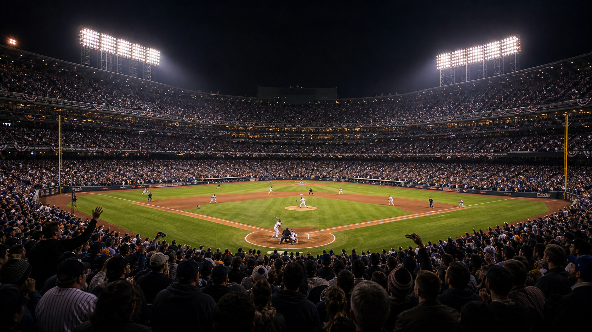
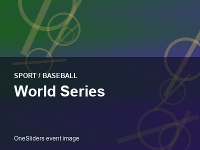

Baseball event guide
World Series
A compact OneSliders guide to World Series: what it is, how the current edition works and which parts matter most.
First trackedEvergreen event
FrequencyAnnual
Next edition2026
Format sizeCompetition stages
History viewEdition results and parts
Use the year switcher for recent editions. The selected edition stays inside this framed sport view.

More BaseballInterested in more Baseball?Explore related events, places and calendar moments.